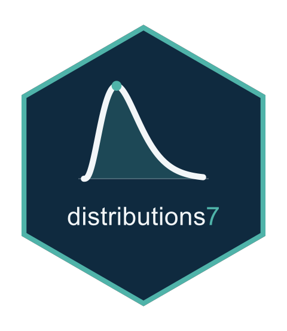

Zero-Adjusted Continuous Quantile Function
Source:R/zero_adjusted.R
distrib_quantile.ZeroAdjustedContinuousDistrib.RdInverts the mixed distribution function across the jump of size \(\pi\) at
zero. A probability falling INSIDE the jump, between
\((1-\pi)F_W(0)\) and \((1-\pi)F_W(0) + \pi\), returns exactly 0;
below it the parent's quantile at \(p/(1-\pi)\), and above it the parent's
at \((p - \pi)/(1-\pi)\).
Arguments
- distrib
A
ZeroAdjustedContinuousDistribobject, fromzero_adjusted().- p
A numeric vector of probabilities, clamped to \([0, 1]\) after the
log.pandlower.tailtransformations are applied.- theta
A named list with the parent's parameters followed by
za.- lower.tail
Logical of length 1. When
TRUE, the default,pis \(P(Y \le q)\); whenFALSEit is \(P(Y > q)\).- log.p
Logical of length 1. When
TRUE,pis given as a logarithm. Defaults toFALSE.- ...
Unused, and accepted so that the signature matches the generic's.
Details
A whole interval of probabilities therefore maps to the same point, which is what inverting a distribution function with a jump means and is not a failure of the inversion. The interval has width \(\pi\).
Notation
\(f_W\) is the parent's density, \(\pi\) the probability of the atom at zero, \(f_Y\) the mixed density and \(\ell\) the log-density of one observation.
See also
distrib_cdf.ZeroAdjustedContinuousDistrib(), which this inverts,
and distrib_quantile() for the generic.
Examples
d <- zero_adjusted(gaussian1_distrib())
theta <- list(mu = 1, sigma = 2, za = 0.3)
distrib_quantile(d, c(0.1, 0.3, 0.5, 0.9), theta)
#> [1] -1.135141 0.000000 0.000000 3.135141
# An interval of probabilities of width pi maps to zero, which is what
# inverting across a jump means.
lo <- distrib_cdf(d, -1e-9, theta)
c(just_below = distrib_quantile(d, lo - 1e-6, theta),
inside = distrib_quantile(d, lo + 0.15, theta),
just_above = distrib_quantile(d, lo + 0.3 + 1e-6, theta))
#> just_below inside just_above
#> -8.116385e-06 0.000000e+00 8.114369e-06
# Away from the jump the round trip closes.
p <- c(0.05, 0.95)
max(abs(distrib_cdf(d, distrib_quantile(d, p, theta), theta) - p))
#> [1] 2.220446e-16